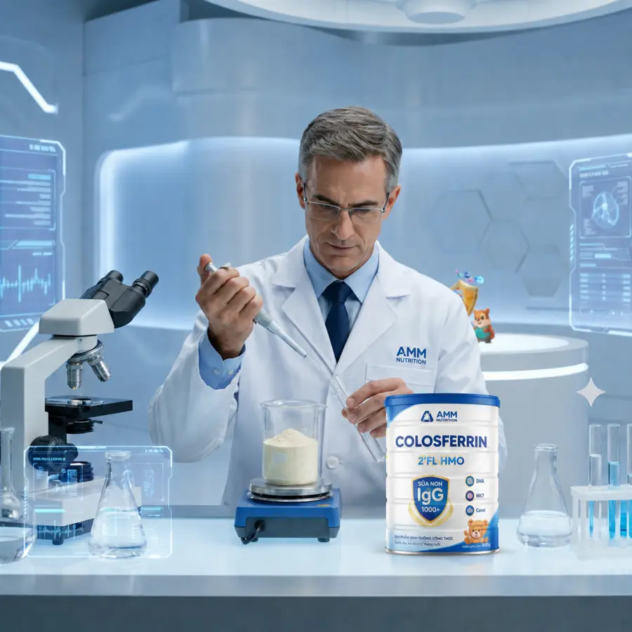
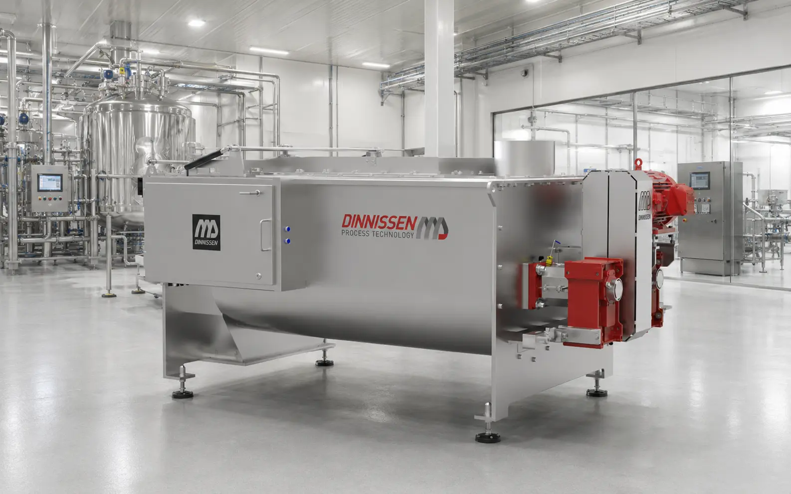
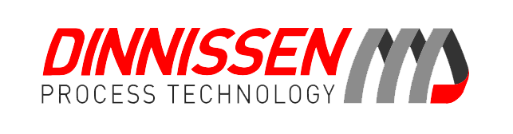
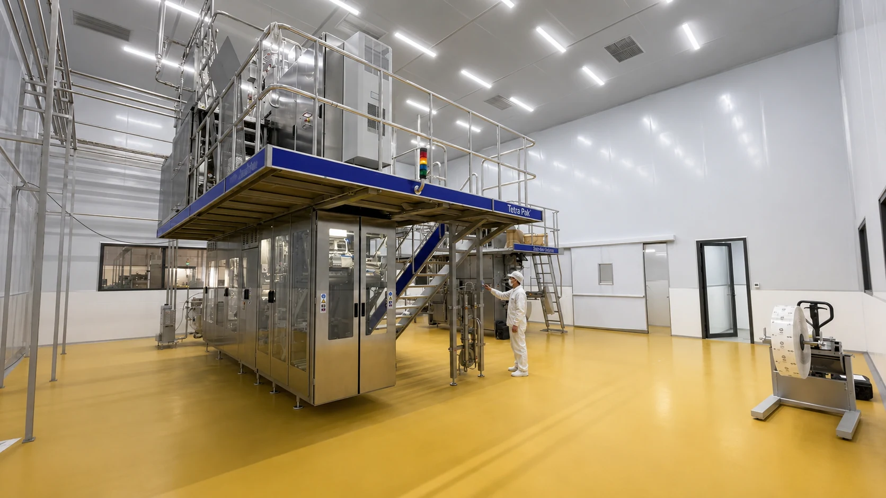
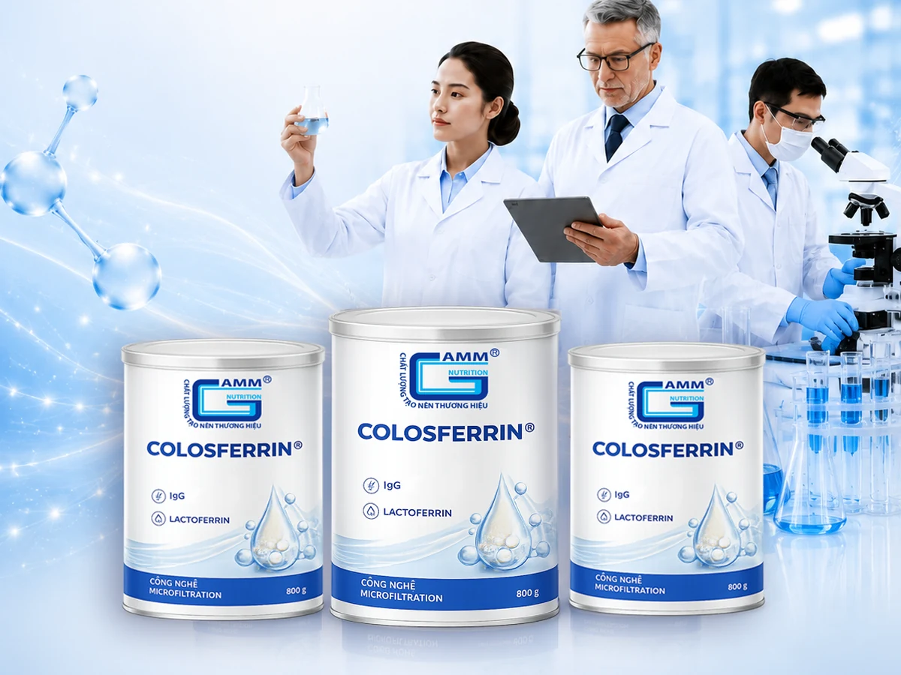
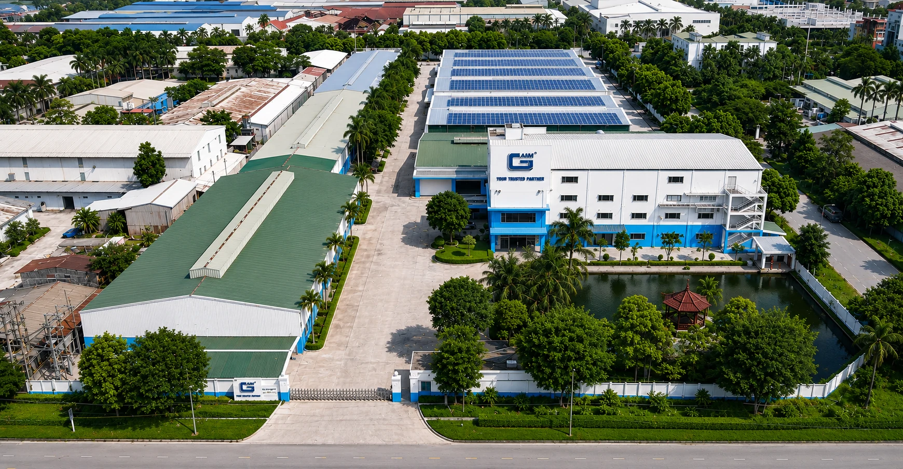

32.347 m²Khuôn viên nhà máy
VỀ AMM GERMANY NUTRITION
Kiến tạo những giá trị dinh dưỡng vì một cộng đồng khỏe mạnh hơn
AMM Germany Nutrition là đơn vị nghiên cứu, phát triển và sản xuất các giải pháp dinh dưỡng khoa học, hướng tới việc đưa những sản phẩm chất lượng, an toàn và phù hợp với nhu cầu thực tế đến gần hơn với cộng đồng.
Bằng sự kết hợp giữa nền tảng khoa học, năng lực sản xuất và tinh thần hợp tác dài hạn, AMM đồng hành cùng các doanh nghiệp kiến tạo những thương hiệu dinh dưỡng có giá trị vượt trội và khả năng phát triển bền vững.
ISO 22000:2018Hệ thống quản lý an toàn thực phẩm
2 dây chuyềnSữa bột và sữa nước
R&D & QA/QCNghiên cứu và kiểm soát chất lượng
OEM/ODMGiải pháp phát triển sản phẩm trọn gói
02
Hành trình được dẫn dắt bởi một khát vọng
Khoa học dinh dưỡng là nền tảng — Hợp tác là động lực để vươn xa
AMM được xây dựng với khát vọng tạo nên một nền tảng nghiên cứu và sản xuất dinh dưỡng có khả năng đồng hành lâu dài cùng các thương hiệu Việt Nam.
Từ nghiên cứu công thức, lựa chọn nguyên liệu, phát triển sản phẩm đến tổ chức sản xuất và kiểm soát chất lượng, AMM từng bước hoàn thiện hệ sinh thái năng lực nhằm rút ngắn khoảng cách từ một ý tưởng dinh dưỡng đến sản phẩm hiện diện hoàn hảo trên thị trường.
Mỗi sản phẩm được tạo ra không chỉ là kết quả của công nghệ hiện đại, mà còn thể hiện trách nhiệm sâu sắc của AMM đối với sức khỏe người tiêu dùng, uy tín của đối tác và những giá trị phát triển bền vững cho cộng đồng.

03
Tầm nhìn – Sứ mệnh – Giá trị cốt lõi
Nền tảng định hướng cho hành trình phát triển dài hạn
Tầm nhìn
Trở thành đối tác nghiên cứu và sản xuất các giải pháp dinh dưỡng uy tín hàng đầu tại Việt Nam, từng bước mở rộng năng lực hợp tác trong khu vực và quốc tế.
Sứ mệnh
Ứng dụng khoa học dinh dưỡng và công nghệ hiện đại để đồng hành cùng doanh nghiệp phát triển các sản phẩm chất lượng, an toàn và phù hợp với nhu cầu cộng đồng.
Giá trị cốt lõi
- Khoa họcMọi giải pháp được xây dựng trên nền tảng nghiên cứu có cơ sở.
- Chất lượngCam kết tính an toàn, ổn định và minh bạch.
- Đổi mớiLiên tục cải tiến công thức, công nghệ và phương thức hợp tác.
- Đồng hànhCùng đối tác chia sẻ mục tiêu và trách nhiệm.
- Bền vữngPhát triển hài hòa với doanh nghiệp, cộng đồng và môi trường.
04
Những dấu ấn tạo nên vị thế AMM
Năng lực được bồi đắp từ nền tảng khoa học, chất lượng và hợp tác

Nền tảng nhà máy hiện đại
Hạ tầng được tổ chức đồng bộ, phục vụ đa dạng nhóm sản phẩm dinh dưỡng.
Hệ thống kiểm soát ISO 22000:2018
Áp dụng hệ thống quản lý an toàn thực phẩm từ nguyên liệu đến thành phẩm.

Ứng dụng công nghệ chế biến chuyên biệt
Kết nối giải pháp từ Tetra Pak, Dinnissen, APV và Rieckermann cho từng công đoạn sản xuất.
Thành viên Hiệp hội Sữa Việt Nam
Thể hiện vai trò tích cực trong sự phát triển chung của ngành sữa và dinh dưỡng.

Bảo hiểm trách nhiệm sản phẩm
Gia tăng nền tảng bảo vệ người tiêu dùng và củng cố niềm tin của đối tác.

Thương hiệu Số 1 Việt Nam 2025
Dấu ấn ghi nhận nỗ lực nâng cao năng lực và uy tín trong ngành dinh dưỡng.
05
Từ năng lực sản xuất đến một hệ sinh thái dinh dưỡng
Mở rộng năng lực để tạo nên những giá trị phát triển bền vững
Khát vọng của AMM không dừng lại ở việc gia tăng quy mô sản xuất. Doanh nghiệp hướng tới xây dựng một hệ sinh thái dinh dưỡng toàn diện, kết nối khoa học, công nghệ, thương hiệu và hệ thống phân phối.
- Nâng cao R&DPhát triển năng lực nghiên cứu chuyên sâu và làm chủ công thức.
- Mở rộng danh mục sản phẩmĐáp ứng nhu cầu đa dạng của thị trường và từng nhóm người tiêu dùng.
- Gia tăng hợp tácKết nối dài hạn với thương hiệu, nhà cung cấp và hệ thống phân phối.
- Quốc tế hóa năng lựcTừng bước đưa sản phẩm và năng lực của AMM tiếp cận thị trường quốc tế.
- Phát triển bền vữngƯu tiên những giá trị lâu dài cho doanh nghiệp, người tiêu dùng và cộng đồng.
THỤY ĐIỂN HÀ LAN
HÀ LAN

ĐỨCRIECKERMANN SPX FLOWAPV06
Năng lực hiện thực hóa những ý tưởng dinh dưỡng
Từ nghiên cứu đến sản phẩm hoàn thiện
R&D
Đội ngũ chuyên gia tối ưu công thức và phát triển giải pháp dinh dưỡng khoa học.
Sản xuất sữa bột
Trộn phối đồng nhất theo mẻ, thiết kế vệ sinh và kiểm soát chất lượng xuyên suốt.

Sản xuất sữa nước
Công nghệ chế biến và đóng gói vô trùng, bảo đảm tính ổn định.
QA/QC
Kiểm soát chất lượng nghiêm ngặt ở mọi công đoạn của quá trình sản xuất.
07
Phát triển doanh nghiệp gắn với trách nhiệm cộng đồng
Giá trị bền vững bắt đầu từ trách nhiệm với con người

Người tiêu dùng
Đặt sự an toàn, chất lượng và sức khỏe cộng đồng làm trọng tâm.
Đối tác
Hợp tác minh bạch, cùng phát triển bền vững và chia sẻ giá trị.

Con người
Kiến tạo môi trường làm việc chuyên nghiệp, nhân văn và sáng tạo.

Cộng đồng
Lan tỏa tri thức dinh dưỡng và đóng góp cho sự phát triển chung.
Cùng AMM kiến tạo những giá trị dinh dưỡng vươn xa
AMM sẵn sàng đồng hành cùng doanh nghiệp trong nghiên cứu, phát triển sản phẩm và xây dựng những thương hiệu dinh dưỡng có giá trị lâu dài.